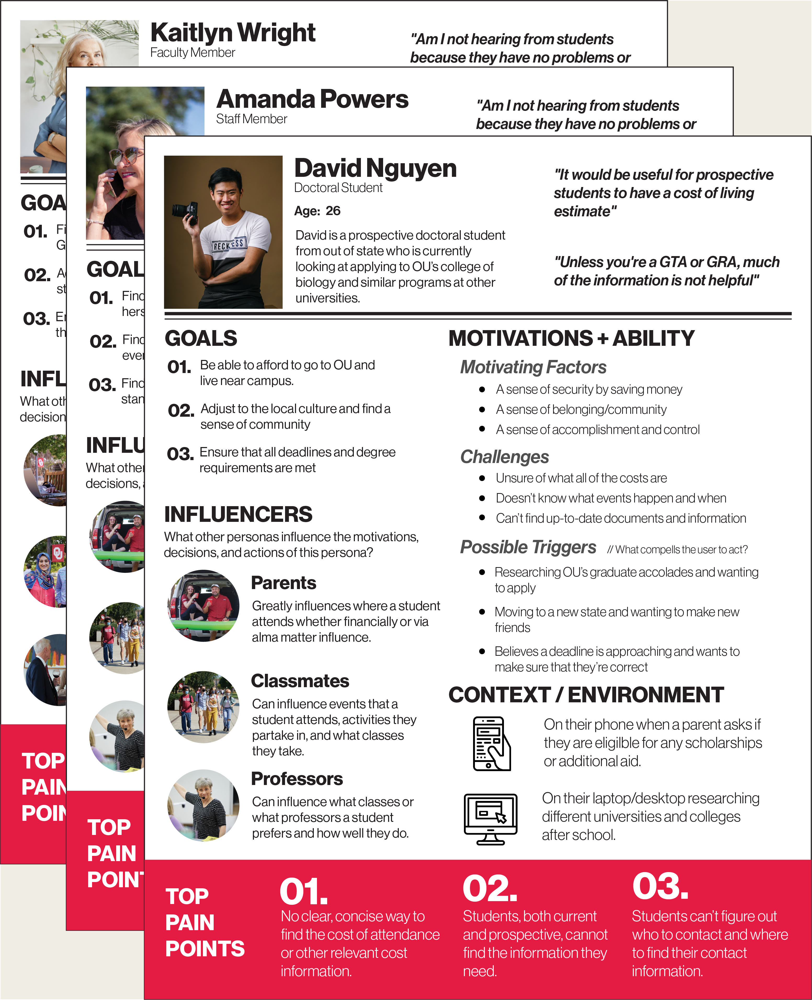
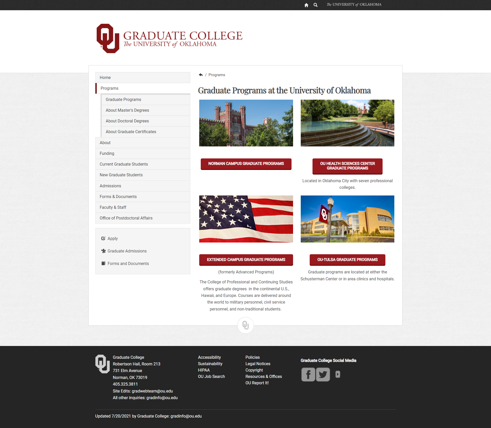

OU.EDU/GRAD
Feb 2022 - Jun 2022
The University of Oklahoma Graduate College Website Modernization project aimed to completely
revamp the existing online presence of the Graduate College. The project involved a full
migration of the outdated website, a comprehensive redesign of the information architecture,
and a meticulous redesign of each page to better serve the needs of students, applicants,
faculty, and staff.
Utilizing Adobe Experience Manager, I managed the entire creation
process, while Mural facilitated storyboarding and UX research, and Adobe Illustrator was
instrumental in crafting and refining graphics. As the sole architect of this project, I
was responsible for every aspect, from initial migration to final user experience, ensuring
a cohesive and user-friendly interface.
PREVIOUS ARCHITECTURE
The left image notates the site web of every page (yellow), homepage/navbar item (pink), every 3rd party site (grey), all connected to the pages and resources they have links to on their respective page. The right image depicts the general site map with the navigation items at the top and nested pages beneath.


EMPATHY MAPPING
Three different archetypes became the focus of the new web architecture after surveying students and faculty
at the university. An empathy mapping exercise was held at the college to dig deeper into who these personas are and how they
would drive the development of the new architecture.
These personas, in order from left to right, are a graduate degree manager, an older graduate professor, and an international doctoral student.

USER NEEDS STATEMENTS
Below are a list of user needs developed from the pain point and empathy mapping exercises.
STUDENTS
- Students need to be able to find the correct admissions application so they can apply to the correct college.
- Students need to be able to correctly estimate tuition and living expenses so they can properly plan their finances and weigh whether attending OU is fiscally responsible.
- Students should be able to see what scholarships and additional funding they are eligible for in order to reduce the burden of tuition and fees.
STAFF
- Staff members need to be able to update the website regularly so they can have the most up-to-date.
- Staff members need to have more automation and communication between the college and students so they can spend less time responding to emails covering the same questions.
- Staff members need to be able to remember where information in order to rely less on time-consuming searching.
FACULTY
- Faculty members need fewer emails from students asking the same questions about information that's on the website so they can spend less time answering the same questions.
- Faculty members need information in an easier to read format so they can scan for the information they need quickly.
- Faculty members need to be able to retrieve important links quickly in order to quickly relay the information to students.
PERSONA GENERATION
These three personas, born out of empathy mapping, need statement generation, surveying, and analyzing pain points, would help guide and influence the methodology for building the final navigation and page architecture. Listed in each persona are their goals, motivations, influences, context, top pain points, and a summary of what group of individuals the persona represents.

CARD SORTING
Once the personas had been built, the stakeholders were gathered to do a card sorting activity to get a general assessment and understanding of which navigation item a page would fall under.
Below is an example of a card sorting submission from one of the seven (7) stakeholders, not including myself.

NEW ARCHITECTURE
The new web architecture focuses on serving different audiences, broken down in the navigation. Student and applicant-facing content runs from left to right, whereas faculty and staff content flows from right to left, with an “I am a” catch-all section in the middle that can redirect users to content most important to their user group.
Note: This project was completed in 2022. While the main architecture is still in place, minor page changes have been made since my departure from the Graduate College. Purple pages indicate ideas for new pages that the Graduate College had at the time of project completion.

Reduced unique page count from 168 to 25. Condensed content from 3 separate websites into 1. Consolidated 21 navigation items into a single, 8 item navbar.
OLD DESIGN



NEW DESIGN